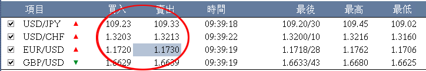
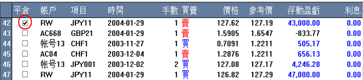
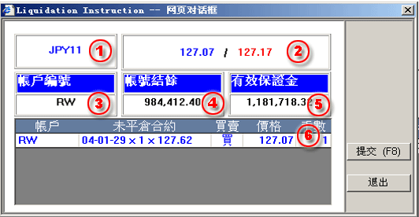

設置現貨交易指令
本平臺爲用戶展示所有的實時市場價格並提供可進行即時交易功能。買/賣價出現並顯示在如下圖的面板上，用戶可隨時隨地的點擊買/賣價區域執行即時的交易指令。本交易平臺提供的交易過程本著公平公正的原則進行的，爲用戶提供實時且真實的市場價格信息，帶領用戶進入瞬息萬變的世界。所有的交易在瞬間即可完成的。
可在下列兩種面板中設置現貨交易指令：
交易面板顯示實時的市場價格信息和設置執行的指令，用戶可隨時點擊買/賣價區域設置交易指令。
|  |
| 1 | 指令的交易項目代號。 |
|
|
| 2 | 指令的交易帳戶。 | ||
| 3 | 輸入的契約手數。 | ||
| 4 | 市場實時價。 | ||
| 5 | 該帳號買入的開倉契約列表。 | ||
| 6 | 該帳號賣出的開倉契約列表。 | ||
| 7 | 輸入要平倉契約的手數。 | ||
| 8 | 買/賣設置框按鈕。 | ||
| 9 | 重置所有的輸入值。 | ||
| 10 | 退出指令設置對話框。 |
用戶可通過在如下開倉列表面板中選中要平倉的開倉指令進行設置現貨交易指令，用戶可簡單地通過選擇該指令前面的Close選擇框並用鼠標雙擊該指令即可平倉某一指令。
|  |
用戶能夠一次性選擇同一交易項目的多張未平倉的單；當雙擊該指令，平倉對話框將出現：
| 1 | 交易項目代碼 |  |
| 2 | 市場實時價 | |
| 3 | 指令所屬的交易帳戶 | |
| 4 | 帳戶結餘 | |
| 5 | 帳戶的有效保證金 | |
| 6 | 契約的數量（用戶可進行修改） |
當用戶覺得價格可以接受，可以按提交按鈕或 F8 完成指令設置。此時系統還會彈出確認窗口，驗證用戶確認。